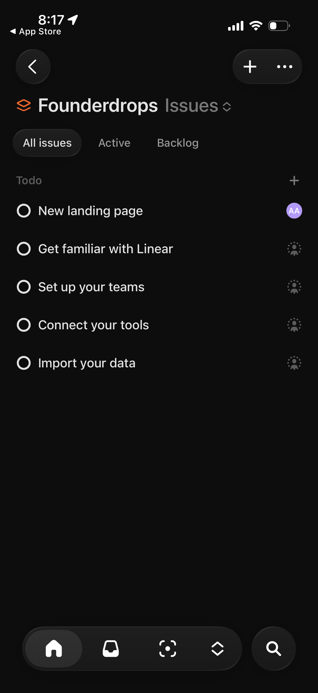
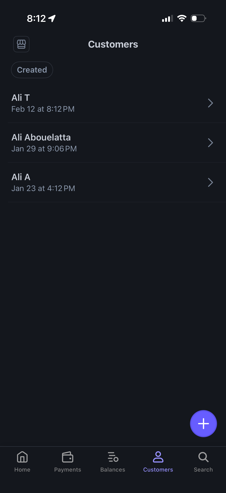
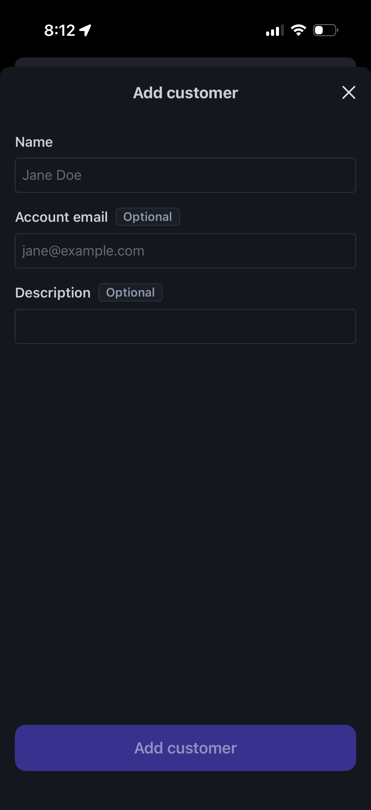
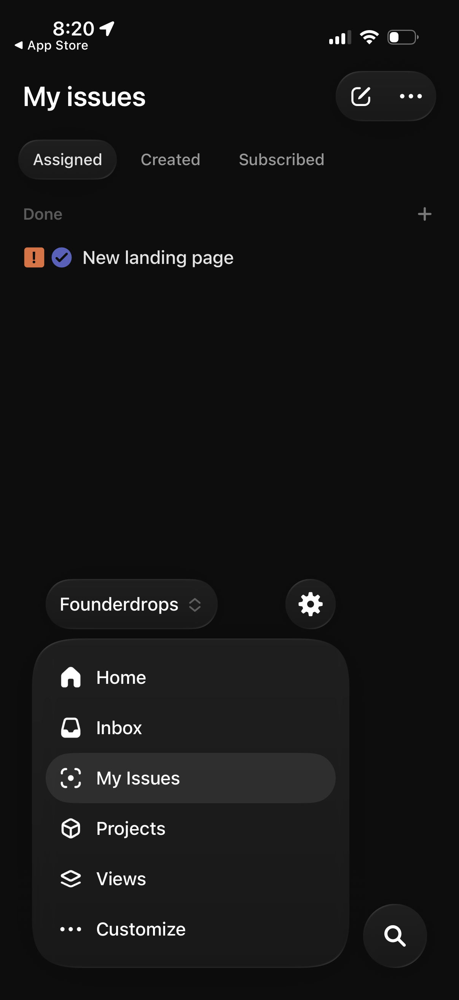
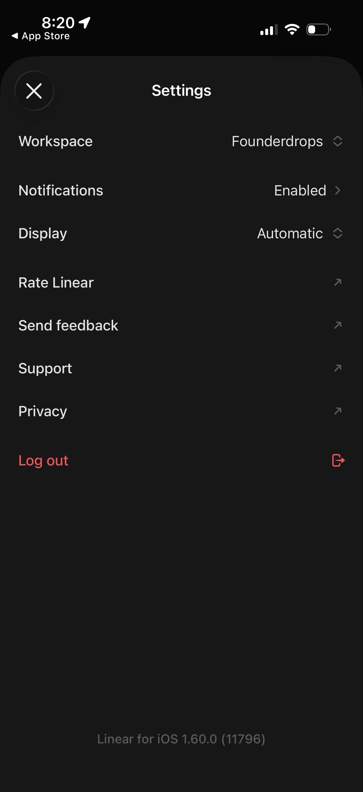

Quick References · 2026-06-02
Admin UI Rebuild References
이번 보드는 이전 패치처럼 개별 카드 색만 바꾸는 작업을 막기 위한 기준입니다. 관리자 화면은 "공개 위시리스트 감성"이 아니라 앱 shell, 지표, 목록, 생성/수정 폼을 빠르게 스캔하는 운영 도구로 재설계해야 합니다.
Source Inventory
| Source | Evidence | Use in this app |
|---|---|---|
| Lazyweb · Stripe Dashboard | 36 screens. Customer list, add customer modal, home metrics, settings/search flows. | Dashboard metrics, customer-like wish rows, create/edit as a contained panel instead of always-open form. |
| Lazyweb · Linear | 37 screens. My issues tabs, project issue list, status picker, settings rows. | Thin tabs, dense rows, status-first management, settings as rows/sections. |
| shadcn/ui dashboard blocks | dashboard-01 uses sidebar, site header, section cards, chart area, data table. | Admin shell should have a real app layout: sidebar/header/content, not stacked marketing cards. |
| Shadcn Application Shell | Application shell key elements: sidebar navigation, top header, content container, breadcrumbs/status areas. | Header should be utility chrome, not the primary content. Page title belongs in content header. |
Pattern 1. App Shell First
What to copy
shadcn dashboard blocks put the shell around the page: sidebar, site header, content container, then section cards and data table. The header is not a large brand banner. It is utility chrome.
Desktop ┌ Sidebar ┐ ┌ Header: breadcrumb / quick action ┐ │ nav │ ├───────────────────────────────────┤ │ account │ │ Page header + metrics │ │ │ │ Main list/table │ └─────────┘ └───────────────────────────────────┘ Mobile ┌ compact app bar ┐ ├ thin nav / menu ┤ │ page header │ │ list first │
Apply to whit-i-want
- Remove duplicated page meaning from the common header. Header can show small brand/account only.
- Move page title and primary action into each page's content header.
- Keep desktop sidebar; on mobile, use one compact navigation pattern only.
Pattern 2. Dashboard Is Metrics Plus Work Queue
Stripe Dashboard's mobile home starts with compact business metrics and report sections. shadcn dashboard blocks pair section cards with a data table. A dashboard that only shows three large empty cards is not useful.

/admin target ┌ 공개 위시리스트 [공개 보기] ┐ │ 선물 0 · 메시지 0 · 모인 금액 ₩0 │ ├──────────────────────────────────┤ │ 최근 선물 / 최근 메시지 list │ │ empty state + primary CTA │ └──────────────────────────────────┘
Do not do
- Do not wrap each zero metric in a huge card on mobile.
- Do not make "선물 관리하기" a full-width black hero button when the dashboard has no other useful content.
Pattern 3. Lists Beat Cards For Admin Work
Linear and Stripe both use dense rows for repeated management items. The current app should treat wishes and messages like operations records, not like public gift cards.


/admin/wishes target
[전체] [모으는 중] [잠시 멈춤] [완료] [숨김]
──────────────────────────────────────
[img] 선물 이름 모으는 중 수정
₩12,000 / ₩45,000 ███░░ 27%
──────────────────────────────────────
[img] 선물 이름 숨김 수정
Apply to whit-i-want
- Wish items should be list rows with a small image, title, status, amount, progress, edit action.
- Messages should be inbox rows first. Letter-like styling can be a detail view, not the list surface.
- Status tabs should sit directly above the list, not inside a big card.
Pattern 4. Create/Edit Is A Panel, Not The Page
Stripe's add customer flow is a modal/panel with a clear title, short fields, optional labels, and one primary action. Inline forms should not dominate the default admin list view.

Apply to whit-i-want
- Default `/admin/wishes`: list and empty state first.
- Add wish: one explicit CTA opens a compact panel or separate create section.
- Edit wish: detail panel/drawer or inline expanded row, not a full edit card for every item.
Pattern 5. Mobile Navigation Should Pick One Model
Linear mobile can afford large dark app navigation because it is a native mobile app with bottom controls. This web app currently stacks header and tabs, which consumes the first viewport without giving more context.

Apply to whit-i-want
- For mobile web, use one compact sticky top app bar plus thin tabs, or a single bottom nav. Do not use both heavy header and heavy tab card.
- Page-level titles should appear in the page content, not repeated by the app shell.
- Account email should be hidden or moved to settings/account surface on mobile.
Pattern 6. Settings Are Rows And Sections
Linear settings screens are grouped, scannable rows. Stripe account/settings screens use category groups. A settings form can still submit as one form, but visually it should read as sections and rows.

Apply to whit-i-want
- Profile, public page, theme, and bank info should be section groups with short descriptions.
- Required/optional indicators should be quiet labels, not extra explanatory blocks.
- Save action should be easy to find but not oversized.
Implementation Rules
- Do not make a bigger card to fix a bad card. Remove surfaces first.
- Use page header + list/table structure for admin pages.
- Use cards only for repeated items when a row is not enough, modals/panels, or true empty states.
- Mobile first viewport must show actionable content, not just common shell and a large empty overview.
- Public theme classes stay out of admin: no
pub-page,pub-card,pub-btn,data-theme. - No DB/API contract changes for this visual pass.